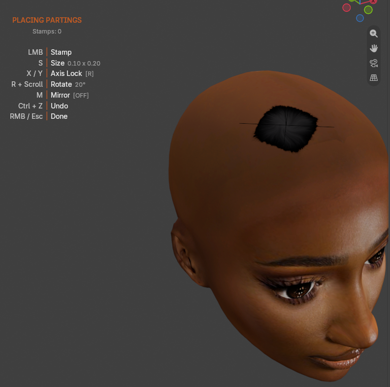
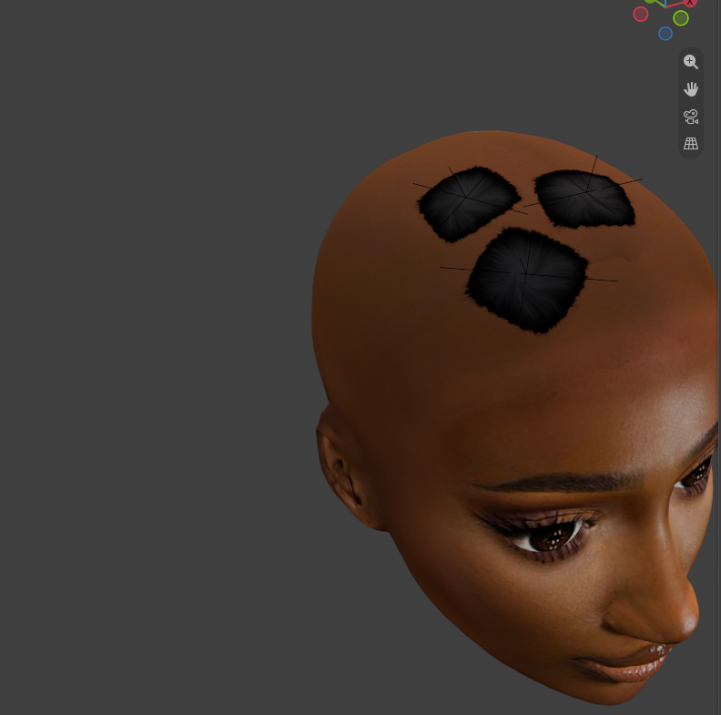

Place Partings¶
Applies to: Parting Placer V2.0.0 · Blender 4.4 · 5.2
Place one or more partings on a head, sized and turned the way you want.
You Need First
- A head mesh with a material. See Requirements.
- The viewport in Material Preview. See Your First Parting In 10 Minutes.
Steps¶
- Select your head mesh.
- In the Parting Placer tab, select Place Parting.
- Move the mouse over the head. A preview parting follows the cursor.
- Press S to switch to size mode.
- Scroll to make the parting bigger or smaller.
- Press R to switch to rotating.
- Scroll to turn the parting.

- Press R again to give the scroll wheel back to the viewport.
- Left-click to place the parting.
- Move to the next spot and left-click again. Repeat for as many as you need.
- Right-click to finish.

The size you end on carries over to your next session. Rotation starts at 0° each time.
To stretch the parting in one direction, press X or Y after S. Every key is on Place Parting And Placement Keys.
Undo While Placing
Ctrl+Z while placing removes the last parting. After you finish, one Ctrl+Z takes back the whole session.
If You're Stuck
- Nothing follows the mouse? See Place Parting Does Nothing.
- Placed it and can't see it? See I Cannot See Any Partings.
Recommended next: Mirror Partings